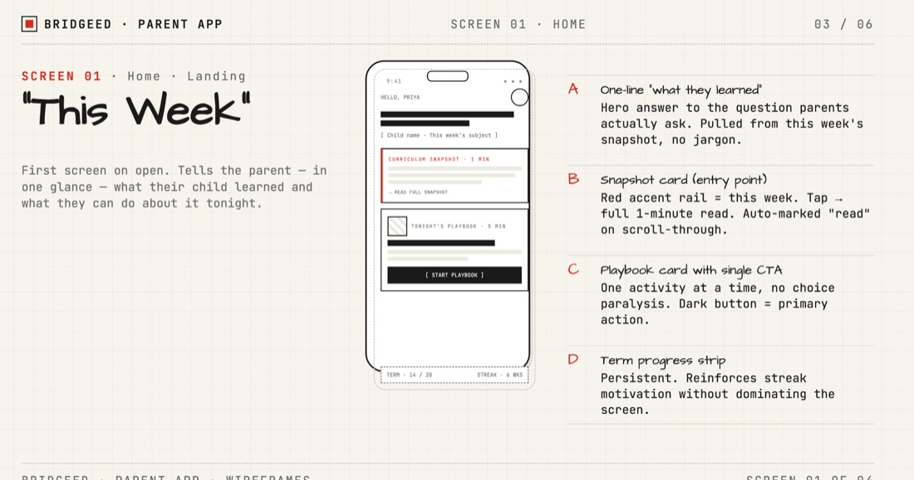
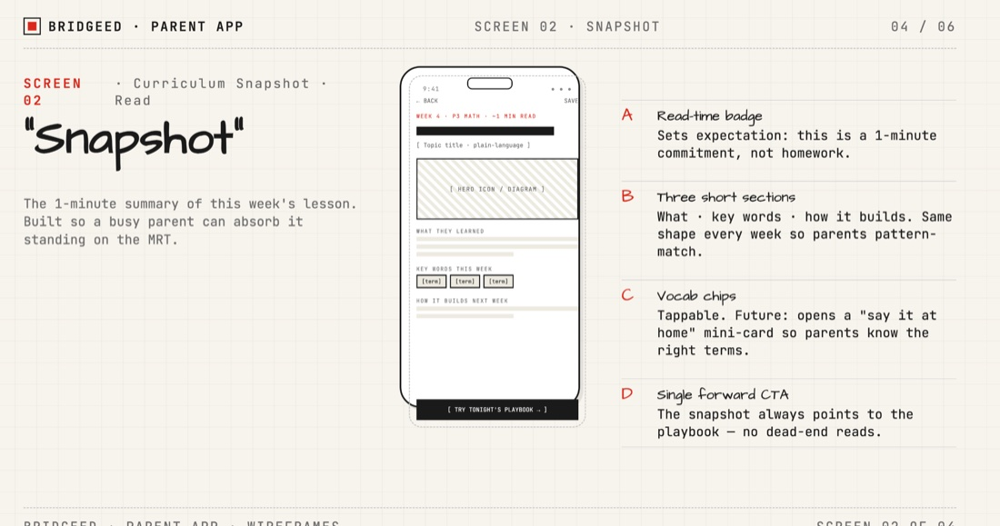
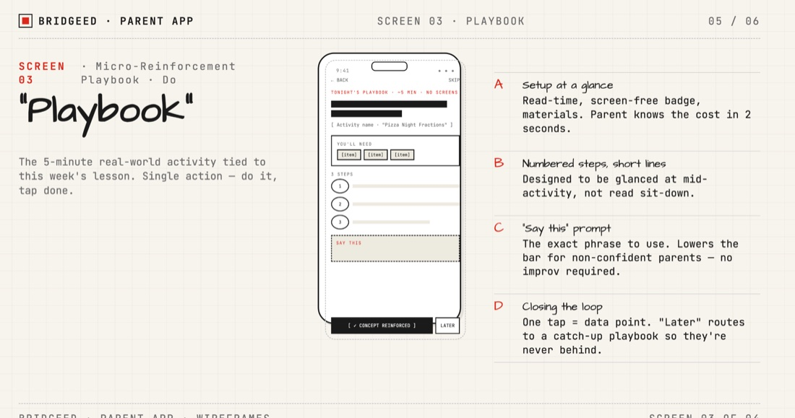
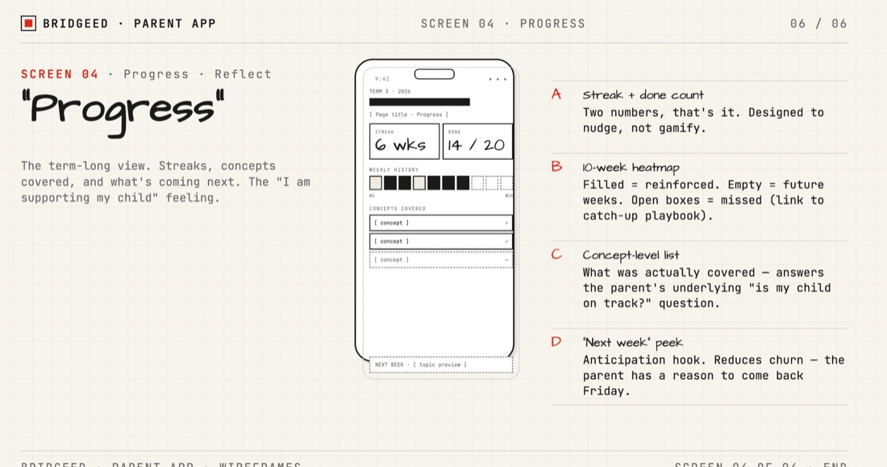

The “Third Pillar” of Singapore’s EdTech — connecting the home, the school & the student.
An automated parental-reinforcement platform that syncs with the Student Learning Space (SLS) and turns each week’s lessons into a 1-minute action a parent can actually take — at near-zero cost to the teacher.
SLS gives students a world-class place to learn. Parents Gateway handles admin. But no one serves the parent as a learning partner — so families can’t see what’s being taught, or how to help.
And MOE’s own AI roadmap reinforces the gap. The AI features now in SLS — Adaptive Learning, Teaching Assistants, Feedback Assistants — map to MOE’s “AI in Education” framework, which has exactly three levels. None of them is the home.
The same gap frustrates the parent who wants to help and overloads the teacher who can’t add more work.
BridgeED is the “Third Pillar” of the MOE EdTech stack. The wedge: it rides on data that already exists in SLS and uses AI to translate it — so parents get structured, bite-sized actions without adding to the teacher’s load.
Product vision: an integrated education ecosystem where schools and families work in harmony to nurture every child’s potential — replacing “noisy” communication with structured learning.
A parent absorbs the week in a minute; a teacher publishes it in under five. The loop is the product.




BridgeED doesn’t compete with the existing tools — it occupies the gap they leave: the parent, as a learning partner, at the lowest teacher cost of any option.
| Tool | Primary user | Teacher load | Home action | Status |
|---|---|---|---|---|
| Parents Gateway | Parents (admin) | Low | Sign forms | MOE official |
| ClassDojo | Teachers (engagement) | High (10+ hrs) | View photos | Unofficial |
| SLS | Students (study) | Medium | Practice questions | MOE official |
| BridgeED | Parents (learning) | Ultra-low (<5 min) | Micro-playbooks | Third Pillar |
Success is measured on both sides of the bridge — parent empowerment and teacher time reclaimed — plus the downstream learning signal.
A focused pilot to validate the dual-impact model before going wide — and an honest read on what could break it.